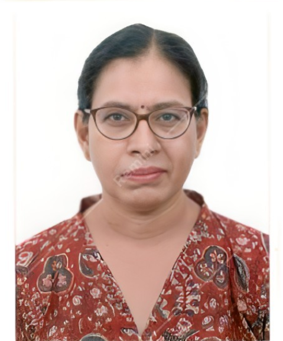
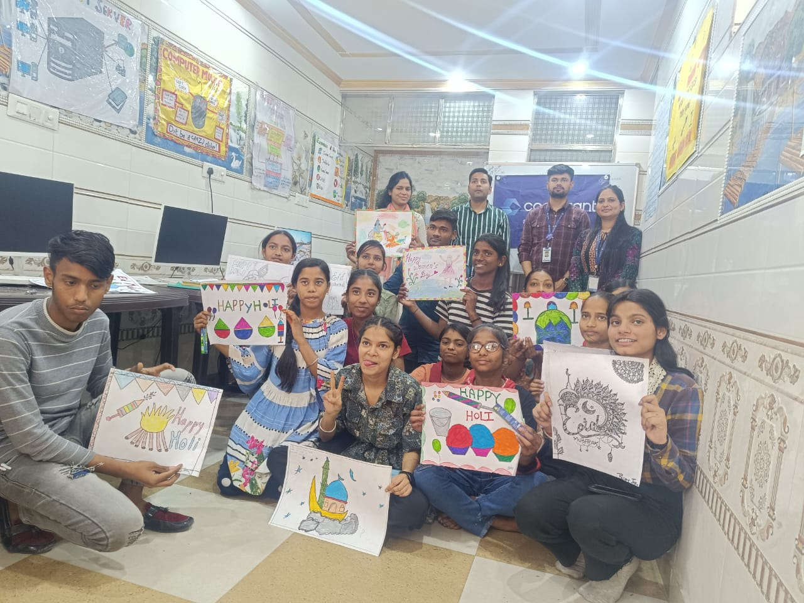
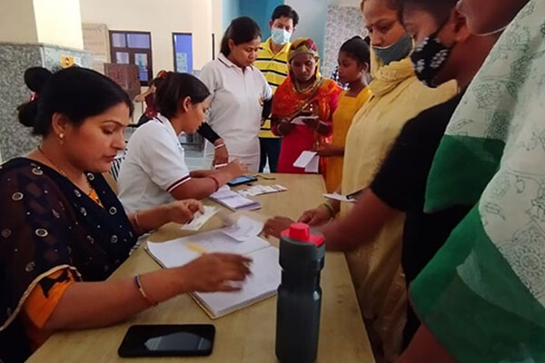
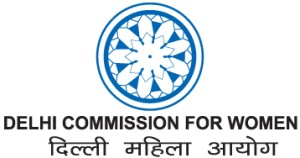
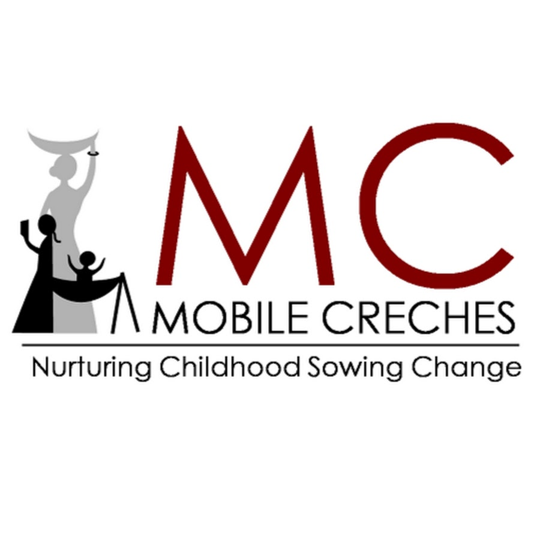
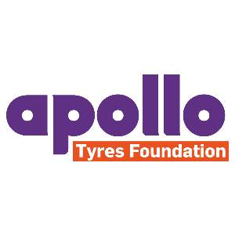
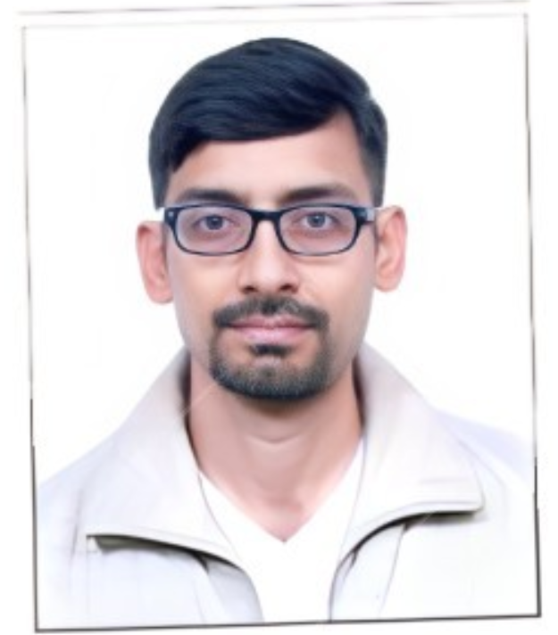
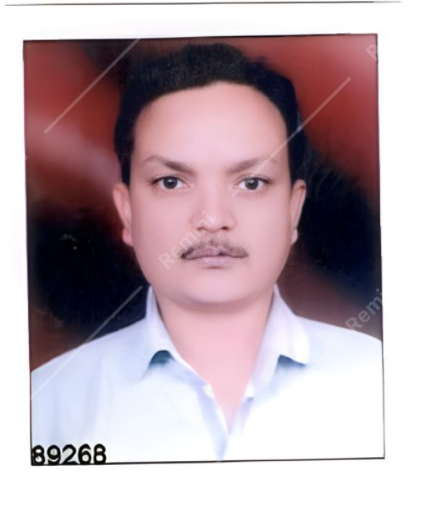
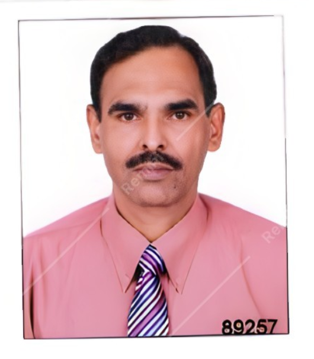

About us
The Association for Social Justice and Research is a non-profit organisation dedicated to promoting social justice through research, advocacy, and community engagement. Our mission is to address systemic inequalities and injustices in society by conducting rigorous research, raising awareness, and advocating for policy changes that advance equity and fairness for all individuals and communities.
Education and outreach
We provide educational resources, training programs, and workshops to increase awareness and understanding of social justice issues among the general public, policymakers, and other stakeholders.
We are a Non-Profit, Non-Governmental Organization (NGO), registered under the Societies Registration Act, 1860 on 23 December 2009 at New Delhi, and recognised for income-tax exemption under Sections 80G & 12A of the Income Tax Act, 1961. We believe that working at the grassroots level alone will not help much to solve problems in a long-term, sustainable manner.
Read our full history →Leadership

Ph.D in Geography, nearly 22 years' hands-on experience ranging from grass-root to planning implementation, monitoring and coordination on social, rights and educational issues prevailing with women, adolescents and children. Affiliated with the Association for Social Justice and Research as General Secretary since 2009, working on gender discrimination and child rights. Prior to that, affiliated with various women's organisations in Delhi.
Dr Kamala Upadhayay
General Secretary · M.A. (Geography), Ph.D
Achievement
Awarded the Volunteer Sector Award for 2017–18 by the National Foundation of India. Through the resulting NFI fellowship, she built awareness among parents about ICDS and the local Anganwadi centre — mobilising the community, engaging the Delhi Commission for Women, and helping secure a sanctioned Anganwadi-cum-crèche for the settlement in December 2017, now serving children aged 3–6 along with pregnant and lactating mothers.
Our approach
Four commitments run through everything we do — each one a fundamental right we work to make real, not just a theme on a page.
Health and education for all
A fundamental human right, not just a goal. We work to remove the disparities and barriers that block access to essential services — through public health initiatives, accessible medical facilities and preventive care that reach communities directly.
A better future for children
Investing in the well-being and development of the youngest members of a community lays the foundation for a healthier, more prosperous society — through quality education, accessible healthcare, and environments where children can genuinely thrive.
Skilled, confident youth
Through quality education, vocational training and mentorship, we help young people build the skills and confidence to take on leadership roles and contribute to their communities.

A violence-free, gender-just society
Dismantling oppressive structures and building environments where people of every gender feel safe and respected — through awareness campaigns, changed norms, and legal frameworks that prevent violence before it happens.
Programmes
-

Health & Wash
Promoting hygiene and healthcare access through community awareness programs, health camps, and sanitation initiatives.
Learn more → -
Livelihood & Skill Development
Empowering communities through vocational training, skill development workshops, and sustainable livelihood programs.
Learn more → -

Education
Quality education for all children through remedial classes, learning centers, and educational support programs.
Learn more → -

Child Rights
Protecting and nurturing young lives through child rights awareness, protection programs, and advocacy.
Learn more → -
Women Empowerment
Building confidence and independence through self-help groups, leadership training, and economic empowerment.
Learn more → -

Disaster Response
Rapid relief and rehabilitation support during emergencies, including counseling and material assistance.
Learn more →
Impact
Fifteen-plus years of grassroots work, measured in the outcomes that matter to the people we work alongside — figures drawn from our own annual reports.
Partners
Child Rights and You

Delhi Commission for Women

Mobile Creches Delhi
Midwest Rotary Delhi

Apollo
Governing body
Dr Kamala Upadhayay
General Secretary · Ph.D in Geography

Mr. B.C Sati
President · Social Activist

Mr. S.C. Shukla
Vice President · Community Leader

Mr. Ram Prakash Tiwari
Joint Secretary · Development Expert